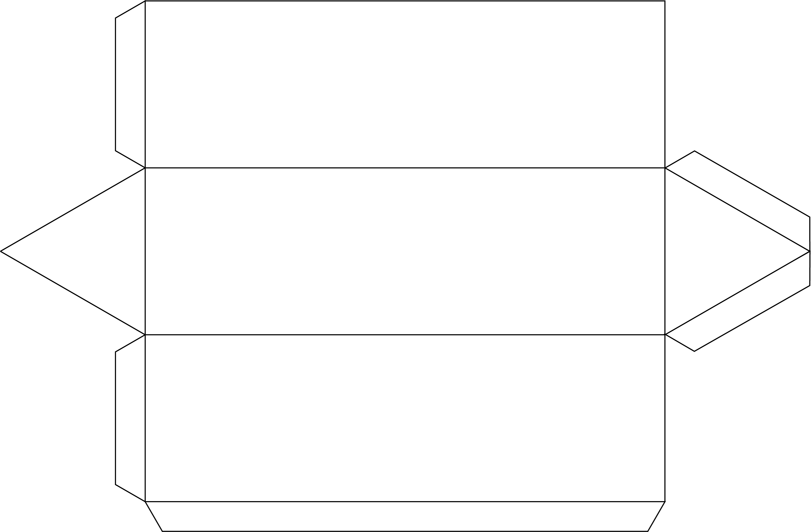
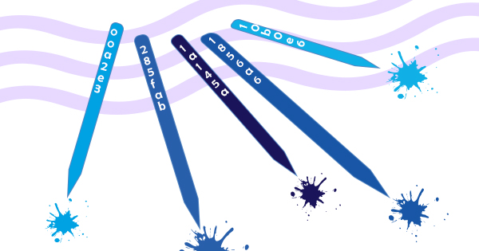

A escolha de fazer uma embalagem para lápis de cor foi intuitiva, pois em nosso cotidiano o lápis é um dos objetos mais presente.
Pensando não somente na embalagem como um invólucro descartável, mas sim em um objeto com formas e cores. A forma foi inspirada na forma de um lápis anatômico, o triângulo.
Nesta embalagem encontraremos a predominância da tonalidade azul, marcações em preto e letras em branco.
O nome da marca vem em referência ao azul-índigo. Cor de aspecto forte, que esta entre o azul e violeta.
